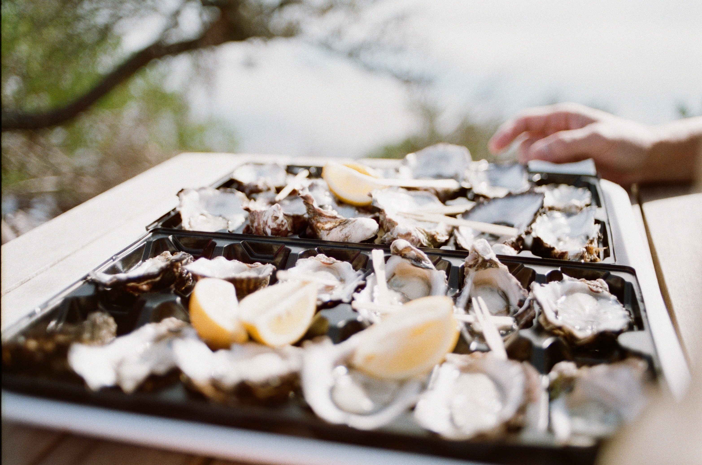
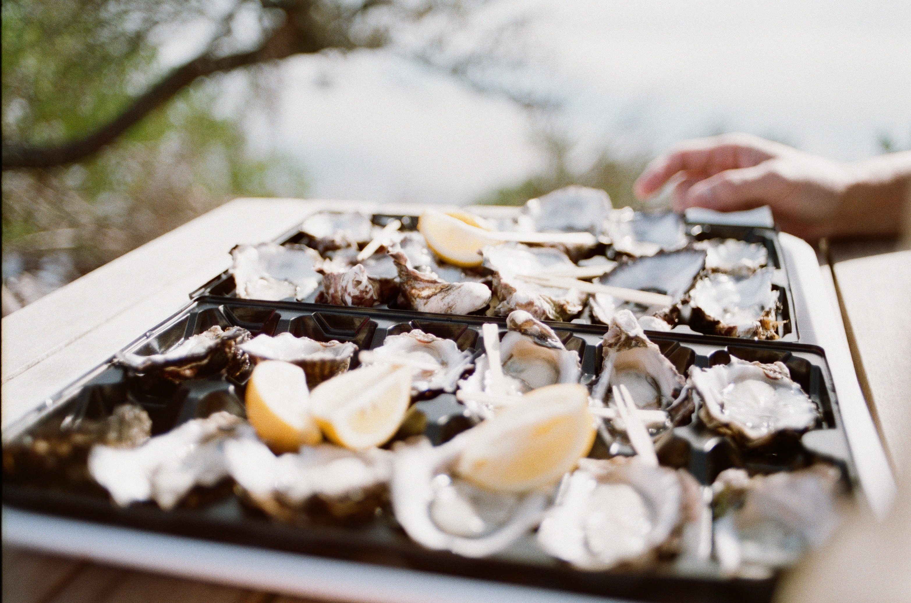

Food and drink in Edinburgh
 

The Ship on the Shore
The Ship on the Shore offers the best of Scottish seafood. It has an excellent wine and champagne selection so you can enjoy a glass with your oysters by the water.
The Dragonfly
Fancy a cocktail? Why not head down to The Dragonfly which serves many of the old classics such as espresso martini or novelities such as rum cocktails topped with italian meringue.
Mother India
Mother India is an old favourite for Edinburgh locals and tourists located in the Newington area of Edinburgh. It offers many favourite indian dishes in small plates so everyone can share.
Kampong Ah Lee
Another favourite for Edinburgh locals - offering delicous malaysian food including roti canai and laska soup. This resturant also sports an extensive bubble tea menu. Like Mother India, this wee gem is located in the Newington area of Edinburgh.